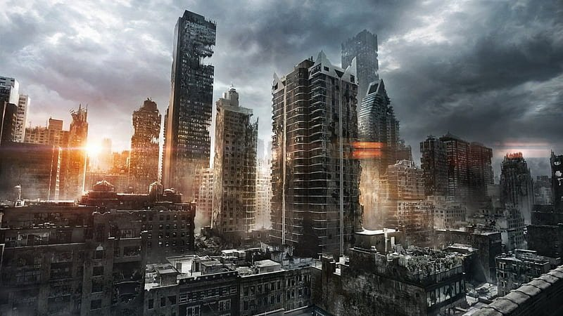

L'émotion d'abord
Nous concevons chaque scène pour qu'elle marque. Le gameplay est au service de ce que le joueur ressent.
Le studio Flexarion a été fondé le 13 octobre 2023 à Aix-en-Provence par quatre amis rencontrés sur les bancs de l'université d'Aix-Marseille, passionnés de jeux vidéo et de science-fiction.
Tout commence un soir de manifestation, en 2022. Les fondateurs regardent la foule défiler sous leurs fenêtres et se demandent : et si un jeu vidéo faisait ressentir ce que l'on vit dans une foule qui réclame justice ? Ils passent l'hiver dans une ancienne imprimerie du centre d'Aix, louée pour presque rien, à construire un prototype : Dernier Signal.
Ce prototype de 20 minutes remporte l'Emotional Game Award 2023. Quelques mois plus tard, Flexarion devient officiellement un studio indépendant. Aujourd'hui, l'imprimerie abrite 50 développeurs, artistes, scénaristes et sound designers, tous mobilisés sur un projet ambitieux : Deviation.

Flexarion associe flexion, l'idée de plier sans rompre, et Arion, le poète grec qui, jeté à la mer, fut sauvé par des dauphins charmés par sa musique.
Pour les fondateurs, c'est la définition d'un bon jeu narratif : une histoire qui met le joueur sous pression, qui le fait plier, mais qui finit toujours par lui tendre la main. Le logo du studio, un symbole de paix en métal fissuré, raconte la même chose : la paix peut se briser, elle ne disparaît jamais tout à fait.
L'Emotional Game Award distingue chaque année le jeu qui procure les émotions les plus fortes. Flexarion l'a remporté en 2023 avec Dernier Signal.
Dans ce prototype, le joueur incarne une opératrice radio qui doit décider quels messages de détresse transmettre pendant une nuit de couvre-feu. Le jury a salué « un jeu à choix où chaque silence pèse plus lourd qu'un mot ». Dernier Signal est devenu le premier chapitre de Deviation.
Nous concevons chaque scène pour qu'elle marque. Le gameplay est au service de ce que le joueur ressent.
La science-fiction est un miroir. Nos dystopies parlent du pouvoir, de l'injustice et de nos propres compromis.
Connexion entre humains, solidarité, richesse de la diversité : ce sont les thèmes qui traversent tous nos jeux.
Quatre fondateurs, quatre métiers, une même envie : faire des jeux narratifs qui laissent une trace.
Elle écrit les mondes de Flexarion et veille à ce que chaque scène serve l'émotion.
Architecte du moteur narratif qui permet aux choix du joueur de se propager dans tout le jeu.
Responsable de l'univers visuel rétro-futuriste et de la palette « terre brûlée » du studio.
Il fait le lien entre l'équipe, les joueurs et les créateurs de contenu.
Parce que tout y a commencé. Flexarion a choisi de rester à Aix-en-Provence pour son dynamisme culturel, sa lumière (qui a beaucoup inspiré les couchers de soleil rouille de Deviation) et sa proximité avec l'écosystème du jeu vidéo de la région Sud et de Marseille.
Le studio accueille chaque année des stagiaires des écoles et universités locales, et organise une game jam ouverte au public chaque automne dans son imprimerie.
Flexarion a été fondé le 13 octobre 2023 à Aix-en-Provence, quelques mois après la victoire de son prototype Dernier Signal à l'Emotional Game Award.
Le studio indépendant compte 4 fondateurs et 50 développeurs : programmeurs, artistes, scénaristes, game designers et sound designers.
Flexarion crée des jeux narratifs à choix de science-fiction, souvent dystopiques, où les actions et conséquences du joueur sont au cœur de l'expérience. Son jeu en développement s'appelle Deviation.
Oui. Flexarion est un studio indépendant : il n'appartient à aucun grand éditeur et garde le contrôle créatif de ses jeux, de l'écriture à la musique.
Le studio recrute régulièrement des profils en narration, game design et programmation à Aix-en-Provence. Les candidatures spontanées sont bienvenues via la page contact.